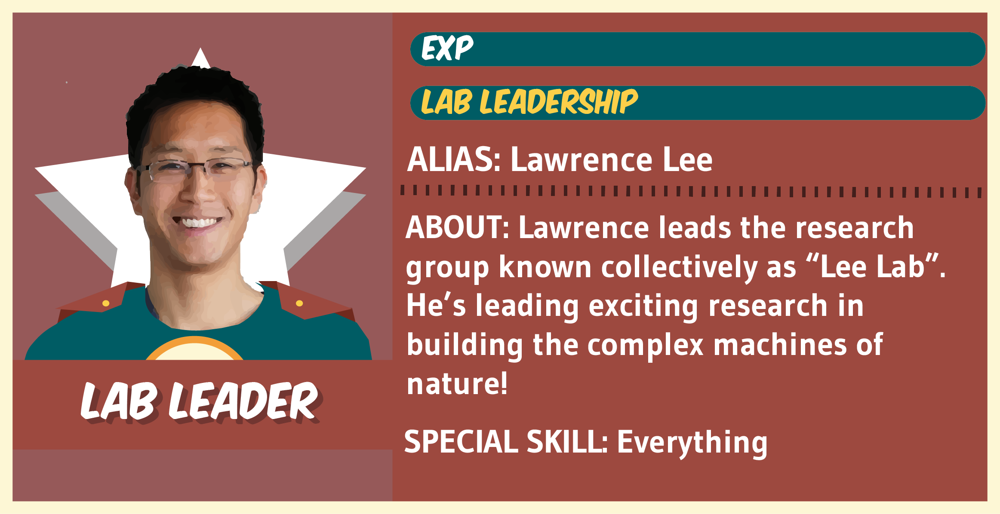
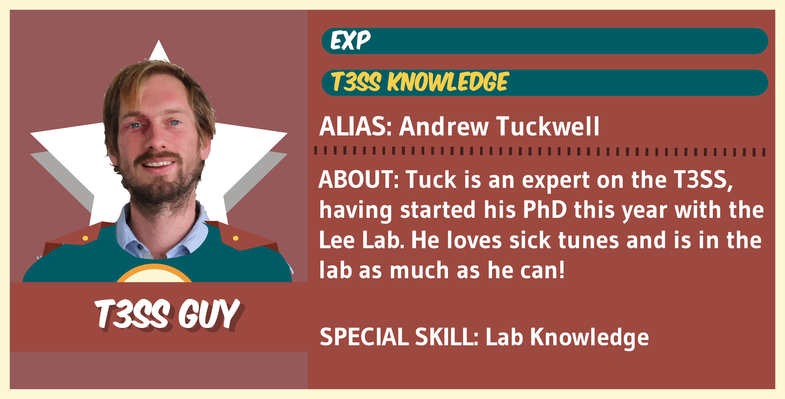
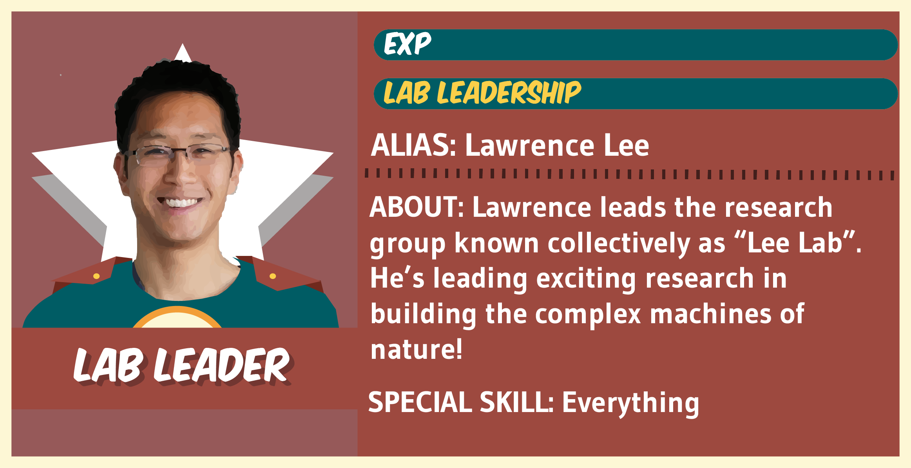
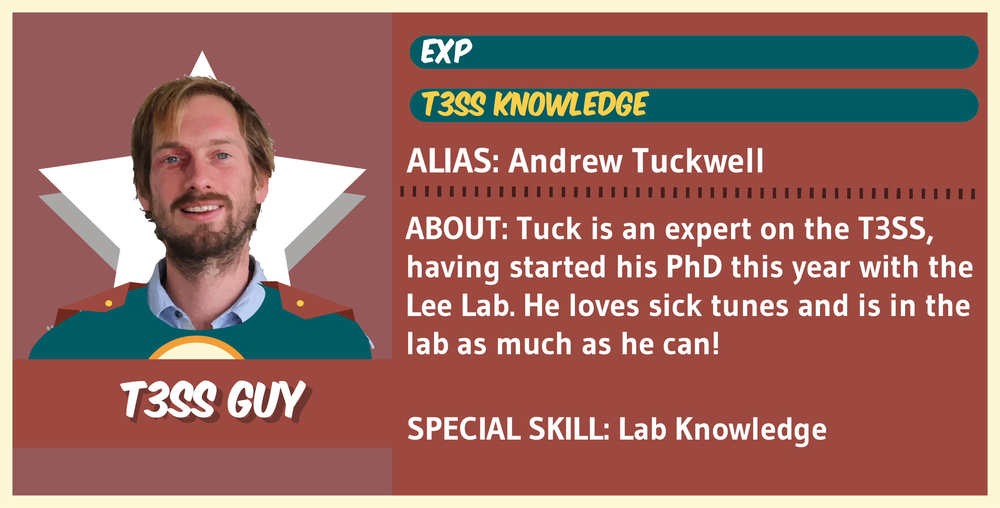

We're a group of seven students from the University of New South Wales, based at the Victor Chang Cardiac Research Institute.
We come from a variety of different backgrounds, including Aerospace Engineering, Biology, Chemistry, Medical Science and Material Science. What we share is a love of science and engineering. That's why we're doing BIOMOD, on top of our university studies!
 


